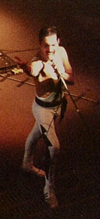
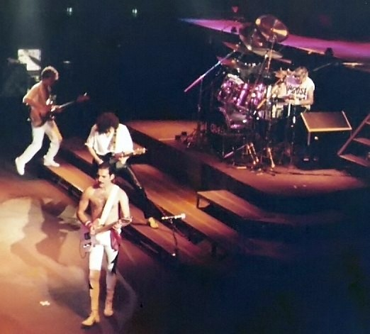
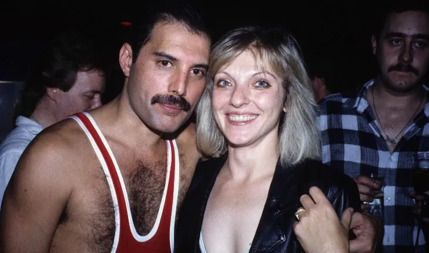

Фредді Мерк'юрі
Фре́дді Ме́рк'юрі (
англ.
англ. Freddie Mercury, справжнє ім'я: Фаррух Бульсара, Farrokh
Bulsara; 5 вересня 1946,
Занзібар
,
Занзібарський султанат
— 24 листопада 1991, Лондон) —
британський
співак, автор пісень і музичний продюсер, відомий передусім як
вокаліст та клавішник рок-гурту Queen . Прославився своїм
яскравим сценічним образом і чотириоктавним вокальним діапазоном.
Написав і виконав багато хітів Queen , зокрема
«Bohemian
Rhapsody»
,
«Killer Queen»,
«Somebody to Love»,
«Don't Stop Me Now»
,
«Crazy Little Thing
Called Love»
,
«We Are the
Champions» . Виступаючи в складі гурту Queen, мав водночас і сольну
кар'єру, а іноді був продюсером та запрошеним музикантом для інших
колективів. Народився в сім'ї парсів у Занзібарському султанаті, виріс
там, а також в Індії, а в підлітковому віці переїхав з родиною до
графства Міддлсекс (Англія). 1970 року разом з гітаристом Браяном Меєм
і барабанщиком Роджером Тейлором створив гурт Queen.
Помер 1991 року, у віці 45 років, внаслідок ускладнень СНІДу, лише за
день до смерті оголосивши про свою хворобу.
1992 року Мерк'юрі посмертно нагородили премією «Brit Awards» за
видатний внесок у британську музику, а на стадіоні Вемблі в Лондоні
відбувся грандіозний концерт на його честь. 2001 року, разом з іншими
музикантами «Queen» , його ввели до Зали слави
рок-н-ролу, 2003 року - до Зали слави піснярів, а 2004-го — до
Британської музичної зали слави. 2002 року Мерк'юрі посів 58-ме місце
в опитуванні 100 найвизначніших британців, проведеному компанією BBC.
За нього постійно голосують як за одного з найвидатніших співаків в
історії популярної музики. У 2008 році Мерк'юрі посів 18-те місце в
списку «100 найвидатніших співаків усіх часів» за версією
американського журналу
«Rolling
Stone»
Ранні роки
Разом з родиною сімнадцятирічний Мерк'юрі втік із Занзібар
у, рятуючись від революції 1964 року, під час якої загинули тисячі
арабів та індійців. Вони переїхали до Фелтема (Міддлсекс, Англія),
де оселились у невеликому будинку на Гладстон-Авеню 22. Мерк'юрі
вступив в Айлворт-Політехнік (нині Коледж Вест-Темз) у Західному
Лондоні, де вивчав мистецтво.
Врешті здобув диплом фахівця з художньої графіки та дизайну в
Коледжі мистецтв Челсі (нині Ілінгський кампус Університету
Західного Лондона). Згодом художні навички допомогли йому створити
геральдичний герб гурту «Queen».
Кар'єра


Композитор
Найбільше в пісенній творчості Мерк'юрі вражає розмаїття стилів, у
яких він працював, зокрема: рокабілі, прогресивний рок, геві-метал,
госпел і диско. Як він пояснив в інтерв'ю 1986 року,
«я ненавиджу робити одне й те саме знову, і знову, і знову. Мені
подобається спостерігати за тим, що зараз відбувається в музиці,
кіно і театрі, і потім поєднувати всі ці речі»
. Порівняно з багатьма популярними авторами, Мерк'юрі зазвичай писав
музично складний матеріал. Наприклад, «Богемна Рапсодія» ациклічна за
структурою і складається з десятків акордів.
До альбому Queen II увійшли шість його пісень, що містять
багато ключових змін і складний матеріал. З іншого боку,
«Crazy Little Thing
Called Love»
містить лише кілька акордів. Хоча Мерк'юрі нерідко писав дуже складні
гармонії, але запевняв, що ледь уміє читати ноти. Більшість пісень він
написав на фортепіано, часто використовуючи акорди, що були
заскладними для його товариша по колективу, гітариста Браяна Мея.
Інструменталіст
В дитинстві, живучи в Індії, Мерк'юрі до дев'яти років брав уроки
гри на фортепіано. Пізніше, оселившись у Лондоні, він навчився грати
на гітарі. Йому переважно подобалася музика, основним інструментом
якої була гітара, а улюбленими артистами в той час були
«The Who»,
«The
Beatles»
, Джимі Гендрікс, Девід Бові, і «Led Zeppelin». Незрідка він критично оцінював свій рівень
володіння обома
інструментами і на початку 1980-х років почав активно запрошувати
інших клавішників. Зокрема, для роботи над своїм першим сольним
проєктом запросив Фреда Мендела (канадський музикант, який також
співпрацював з «Pink Floyd», Елтоном Джоном і гуртом Supertramp).
Починаючи з 1982 року Мерк'юрі співпрацював з Морганом Фішером
(виступав з «Queen» на концерті під час туру «Hot Space leg»). А від
1985 року й надалі співпрацював з Майком Мораном (у студії) і
Спайком Едні (на концертах).
Мерк'юрі виконував фортепіанну партію в багатьох найпопулярніших
піснях гурту, зокрема:
«Killer Queen», «Bohemian Rhapsody», «Good Old-Fashioned Lover
Boy», «We Are the Champions», «Somebody to Love» і «Don't Stop Me
Now»
.
Він використовував концертні фортепіано, а часом і інші клавішні
інструменти, наприклад клавесин.А з 1980 року в студії почав також часто використовувати
синтезатори
. Він був віртуозним піаністом, а його гра — зазвичай дуже
оригінальною, з особливим акцентом на ритмі. Однак, зі слів товариша
по гурту
Браяна Мея
, Фредді не був достатньо задоволеним своєю грою на фортепіано і з
часом став рідше користуватись інструментом, оскільки хотів рухатись
по сцені і розважати публіку.
Мерк'юрі написав багато гітарних рядів, хоча мав лише початкові
навички гри на цьому інструменті
. Такі пісні, як «Ogre Battle» і «Crazy Little Thing Called Love»,
були написані на гітарі; у другій з них Мерк'юрі грав на ритм-гітарі
і на сцені, і в студії.
Особисте життя

Особистість
Хоча на сцені Мерк'юрі культивував яскравий тип особистості, він був
боязким і нерішучим поза сценою, особливо поруч з людьми, яких не знав
добре, і давав дуже мало інтерв'ю. Якось він сказав про себе:«коли я виступаю, я — екстраверт, але
всередині я зовсім інша
людина»
. Перебуваючи на сцені співак купався в променях любові від своїх
слухачів. У своїй передсмертній записці
Курт Кобейн
згадує, як він «захоплювався і заздрив, коли Мерк'юрі, здавалося,
любив насолоджуватися любов'ю і обожнюванням натовпу».
1987 року Мерк'юрі відзначив свій 41-й день народження в Pikes Hotel
(Ібіса), через кілька місяців після того, як дізнався, що в нього
ВІЛ.
Мерк'юрі дуже сильно шукав розради в тому відпочинку й був близьким
другом власника готелю, Ентоні Пайка, який описав співака як
«найкрасивішу людину, що я будь-коли зустрічав у своєму житті. Таку
цікаву і щедру». За даними біографа
Леслі-Енн Джонс, Мерк'юрі «почувався там як вдома. Він грав у теніс,
відпочивав біля басейну, а вночі відвідував ґей-клуб або бар».
Вечірку, що відбулася 5 вересня 1987 року, називали
«найнеймовірнішим прикладом надмірності, свідком якої цей
середземноморський острів будь-коли був». Її відвідали близько
700 осіб.
Торт у формі Храму Святого Сімейства Ґауді створили спеціально для
вечірки, хоча справжній торт розвалився і його замінили на 2-метрову
губку з нотами пісні Мерк'юрі «Барселона».
Менеджер Queen Джим Біч отримав рахунок на відшкодування збитків, де
порахували 232 розбиті склянки.
Захоплення
За свідченням сучасників, Фредді Мерк'юрі був дуже цікавою
людиною, з величезним почуттям гумору. Він любив класичну оперу та
балет (це видно з його костюмів
на початку кар'єри), цікавився мистецтвом Японії та колекціонував
японські витвори мистецтва.
Фредді мешкав у великому будинку із садом. У нього було кілька кішок
(якось водночас у нього їх жило десять), які були його
найулюбленішими тваринами. Його альбом
«Mr. Bad Guy» та пісня «Delilah» були присвячені кішкам, також
Мерк'юрі знімався у відео в костюмах, що нагадували кішок
(наприклад, у відеокліпі для «These Are the Days of Our Lives»).
Також тримав у своєму маєтку у спеціальному басейні золотих коропів.
Був палким прихильником відомої американської кіноактриси
Мерилін Монро
. Зі співачок найбільше захоплювався талантом Арети Франклін. Його
улюблені напої — горілка та шампанське.